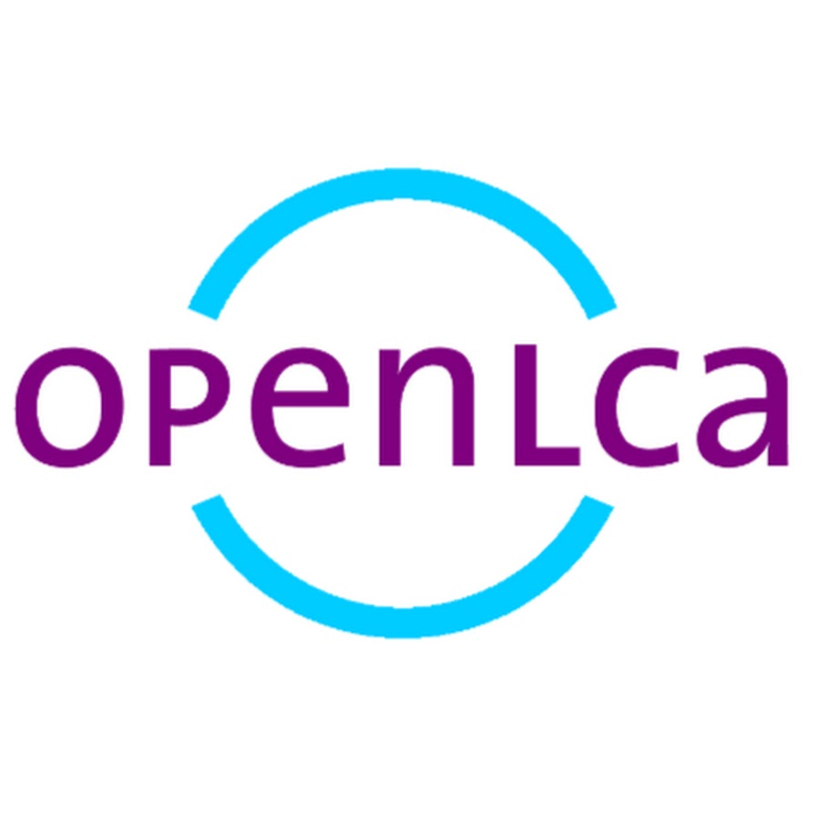
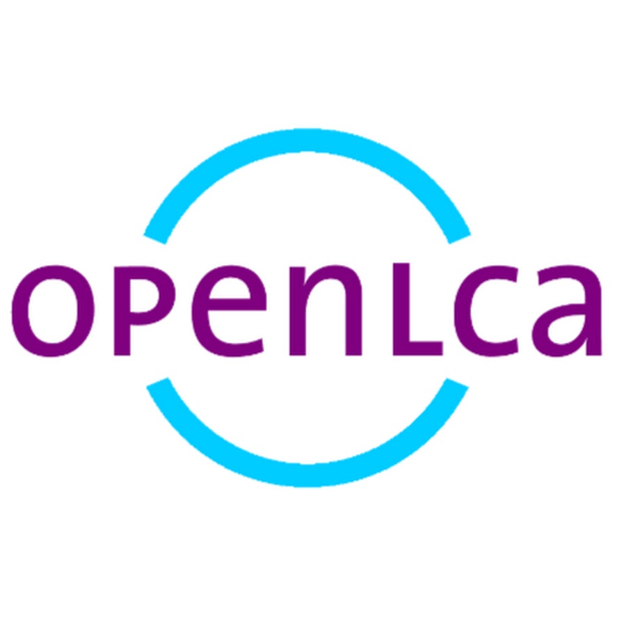

Research
- All
- Journal
- Conference
- Projects
FEDERATED LEARNING DRIVEN PUBLIC TRANSIT OPTIMIZATION: A SCALABLE APPROACH FOR URBAN MOBILITY IN ADDIS ABABA
Urban mobility in Addis Ababa is optimized using a privacy-preserving Federated Learning framework that aggregates insights across agencies without sharing raw data, and yielding sizable and usable gains: about 25% lower in travel time, 22% less congestion, and more efficient routes. The results are replicable and policy-ready model which supports smarter planning and sustainability.
This research is currently under review in Smart and Resilient Transportation Journal
- Pritom, N. D., “FEDERATED LEARNING DRIVEN PUBLIC TRANSIT OPTIMIZATION: A SCALABLE APPROACH FOR URBAN MOBILITY IN ADDIS ABABA” Smart and Resilient Transportation Journal (Under Review).
Urban transformation through connected and automated
vehicles: infrastructure, transportation, and societal impacts
Connected and automated vehicles could improve safety, efficiency, and systainability, but it requires reconsideration of physical, digital, and institutional infrastructure with cybersecurity and privacy concerns. This article demonstrates the potential benefits and challenges of CAVs, and provides a roadmap for urban transformation, societal shifts and major obstacles ahead.
Pritom, N.D., Dey, N.L. Urban transformation through connected and automated vehicles: infrastructure, transportation, and societal impacts. Scientific Journal of Silesian University of Technology. Series Transport. 2025, 128, 199-235. ISSN: 0209-3324.
- DOI: https://doi.org/10.20858/sjsutst.2025.128.12
Forecasting the Severity of Traffic Accidents in Highway
Using Random Forest, Bayesian Network and XGBoost
Using accident data from 274 Norwegian highway tunnels (2010–2020), the study identifies ten key risk factors and predicts accident severity with a Random Forest model. The model outperforms Bayesian Network and XGBoost, achieving 86% accuracy and ROC-AUC of 0.89, validated via confusion matrix and ROC analyses. Findings support proactive tunnel operations and congestion mitigation by prioritizing high-risk conditions and locations.
This research is currently under review in KFUPM Journal of Undergraduate Research International
- Pritom, N. D., and Goswami, T., “Forecasting the Severity of Traffic Accidents in Highway Using Random Forest, Bayesian Network and XGBoost.” KFUPM Journal of Undergraduate Research International (Under Review).
Predicting Vehicular SO2 Emissions using Artificial
Neural Networks and Mamdani Fuzzy Logic: A Comparative Analysis.
Urban SO₂ from vehicles exceeds the 1‑hour EPA standard in the study areas, so the authors test two data-driven predictors: a backprop‑tuned MLP neural network and a Mamdani fuzzy logic system using six vehicle-type inputs. The ANN fits better, showing strong agreement with observations (R≈0.93, RMSE≈0.027) and lower error than fuzzy logic (RMSE≈0.049), making it the more informative tool for estimating vehicular SO₂. The work suggests adding meteorological variables next to build an optimal, more generalizable model for urban air-quality management.
Pritom, N. D., and Goswami, T., “Predicting Vehicular SO2 Emissions using Artificial Neural Networks and Mamdani Fuzzy Logic: A Comparative Analysis.” International Journal of Computer Applications (PhD Focus), Volume 186, no. 37 (2024).
- https://doi.org/10.5120/ijca2024923945
Cost Estimation Model for Pavement: A Smart Fuzzy Expert System Framework
Accurate cost estimation is a critical yet complex aspect of construction project management. Inaccuracy in this area often leads to budget overruns and project delays. This study builds a fuzzy expert system, using real cost records from the Roads and Highways Department in Bangladesh, to predict pavement construction costs for different pavement types. Implemented in MATLAB and validated through error analysis, the model delivers estimates within a ≤15% margin of error, suitable for both preliminary and final budgeting.
Pritom, N. D., "Cost Estimation Model for Pavement: A Smart Fuzzy Expert System Framework.” 8th International Conference on Civil Engineering for Sustainable Development, Khulna, Bangladesh, 2026-02-10.
Predicting Accident Hotspot using GIS and Predictive Modelling
Rapid urbanization has driven up traffic and crashes on the Dhaka–Sylhet (N2) corridor, where 16 years of data (2000–2015) were analyzed to guide prevention. The study pinpoints 50 black spots including 10 high‑risk locations—and builds accident‑frequency models to uncover the factors behind crashes. These insights give policymakers practical targets to reduce crash frequency and severity in similar low‑ to middle‑income settings through focused enforcement, engineering fixes, and data‑led planning.
Pritom, N. D., Broshopriyo, K., and Goswami, T., "Predicting Accident Hotspot using GIS and Predictive Modelling." International Conference on Civil Engineering, Research and Innovation, ICCEI 12-14 December, 2025
Flood Level Prediction Using Artificial Neural Network and Random Forest with Multivariate Hydrometeriological Inputs:
A Case Study of Sylhet, Bangladesh
Sylhet faces frequent, compound flooding from heavy rain, high upstream flow, and saturated soils—seen acutely in the 2022 Surma basin disaster—demanding predictive, data‑driven management. This study builds daily water‑level forecasts using two models—an ANN with two ReLU hidden layers and a Random Forest ensemble—trained on 1961–2024 data for four drivers: precipitation, soil moisture, evaporation, and upstream discharge. Both models perform strongly, with Random Forest edging ahead and revealing precipitation and upstream discharge as the most influential factors; the dual‑model outputs can strengthen early warnings, guide risk reduction, and support climate adaptation for Sylhet’s long‑term resilience.
Goswami, T., and Pritom, N. D., "Flood Level Prediction Using Artificial Neural Network and Random Forest with Multivariate Hydrometeriological Inputs: A Case Study of Sylhet, Bangladesh." 8th International Conference on Civil Engineering for Sustainable Development, Khulna, Bangladesh, 2026-02-10.
A Bayesian Network Framework for Predicting Freight Accident Metrics: Integrating Environmental, Physiological,
and Driver Health Factors with Machine Learning Validation
Key Focus: Accesses multiple factors such as driver’s health factors, environmental factors, traffic risk etc., sensitivity analysis, scenario analysis, and predictive modelling using ML. Impact of drivers' health is addressed by classifying into two broad categories such as Metabolic/Cardiovascular, and Age/Sleep related factors. This research introduced a novel methodology to integrate driver health data with environmental and traffic factors to predict freight accident metrics using Bayesian Networks, validated through machine learning techniques such as Random Forest, SVM, Logistic Regression, and XGBoost.
Applications: The identified nonlinear risk thresholds enable decision makers to the targeted health screening protocols and fatigue management policies for freight carriers and regulators. This can also serve as actionable triggers for different responses, such as turning on real-time fatigue checks, or enforcing restrictions on speed and lane rules when adverse health, weather, and traffic conditions conflate. By integrating clinical profiles to real operating conditions in a transparent and scenario-tested model, this approach supports decisions from drivers’ health protocols to corridor treatment such as visibility upgrades and traction control on wet roads. This research is ready to submit and PDF is linked up with drive
Exploring Key Trade-offs in Pavement Type Selection for Developing Economies
through Life Cycle Sustainability Assessment (LCSA)
Key Focus: Examines the Environmental (GWP, PO4, PM2.5 etc.) and Social impact of E-LCA, Life Cycle Cost, and Cumulative Energy Demand, of both pavements to address the UN's three SDG goals which are SDG9, 11, and 13. This research also employs OpenLCA and Ecoinvent v3.10 as background database to develop the processes used for modelling of pavement LCA.
Applications: The findings of this reseach highlights the critical life-cycle trade-offs that policymakers in developing countries must balance when pursuing climate-aligned, cost-effective infrastructure development. The significance of this study lies in its scalable and replicable decision supported framework that directly aligns pavement infrastructure strategies with the Sustainable Development Goals (SDG 9, SDG 11, and SDG 13). This integrative methodology provides both scientific and policy communities with a new lens to evaluate sustainable transport infrastructure in resource-constrained economies. This research is ready to submit and PDF is linked up with google drive
Calculation of Comfortable Cost and Consumer Satisfaction through Pavement
Choice Model: An Willingness-to-Pay (WTP) Approach
Key Focus: Investigating the Comfortable Cost by converting Consumer Satisfaction into monetary value using WTP. This research also employs Stated Preference Survey (SP) to collect the data from the respondents and develop the Multinomial Logit (MNL) Model to estimate the Comfortable Cost for both pavement types.
Outcomes: Aims at developing a Pavement Choice Model and consumer satisfaction among different pavement types such as HMA or PCC. Currently working on this research
Professional Experience
- All
- Assistantships
- Work Experience
Transportation Safety and Freight Accident Analysis
Department of Civil and Environmental Engineering, Shahjajalal University of Science and Technology
June 2024 - Present (Supervised by Prof. Dr. Ahmad Hasan Nury)
- Contributed to a key transportation safety project by analyzing and identifying the critical health and environmental impacts.
- Predicted Freight Accident Matrics using Bayesian Networks and validated through ML model
Comfortable Cost and Satisfaction Assessment of Pavements
Department of Civil and Environmental Engineering, Shahjajalal University of Science and Technology
July 2025 - Present (Supervised by Prof. Dr. Md. Bashirul Haque)
- Developing a Pavement Choice Model and Consumer Satisfaction by assigning monetary value using Willingness-to-Pay.
- Employed Stated Preference (SP) survey while data collection.
- Used Multinomial Logit (MNL) model to estimate Comfortable Cost for both pavement types.
Pavement Life Cycle Sustainability Assessment (LCSA)
Department of Civil and Environmental Engineering, Shahjajalal University of Science and Technology
July 2023 - Present (Supervised by Prof. Dr. Bashirul Haque)
- Assisted in conducting Life Cycle Sustainability Assessment (LCSA) of different pavement types in developing economies.
- Examined long-term environmental and economic viability of pavements.
- Addressed SDG9, 11, and 13.
Survey Supervisor
Asian Development Bank-supported study of Roads and Highway Department, Bangladesh
August 2025 - September 2025
- Leading field team consisting of 17 members to plan, conduct, and quality-assure survey.
- Multi-stakeholder surveys of vehicles, drivers, and the public.
- Ensured methodological rigor, safety compliance, and reliable datasets for downstream engineering decisions and policy insights.
Research Executive
American Concrete Institute, SUST Student Chapter
July 2024 - August 2025
- Collaborated with peers to translate materials and pavement knowledge into practice-focused activities.
- Strengthened my foundation in constructability, durability, and performace evaluation of pavements.
Skills
Languages and Databases


 


.jpg)

Frameworks


Tools